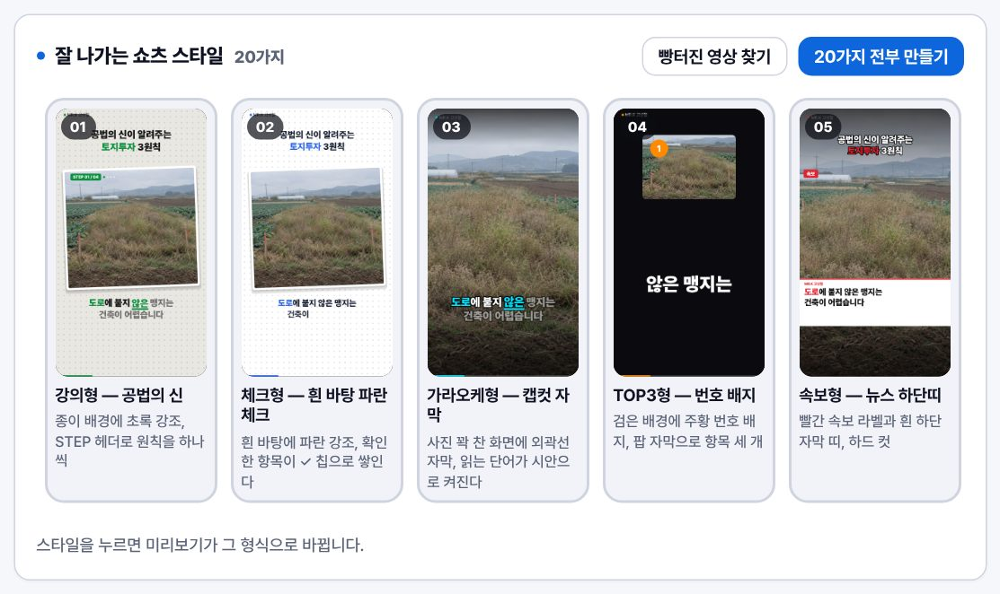
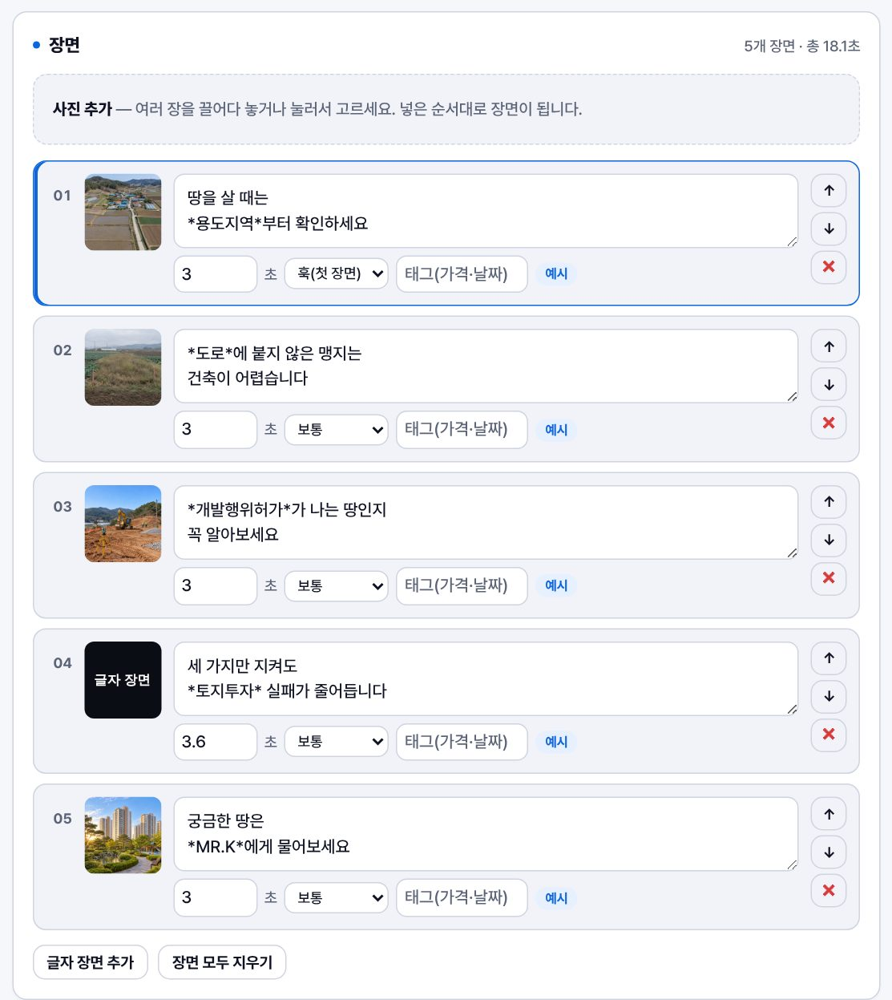
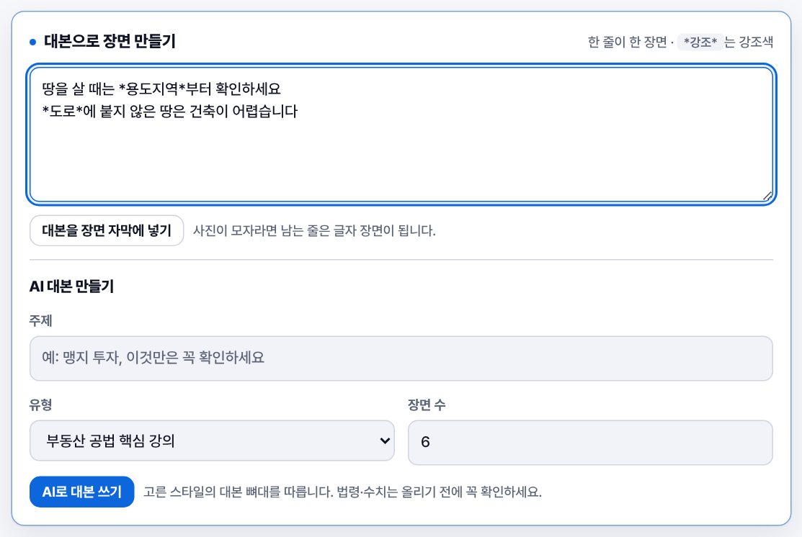
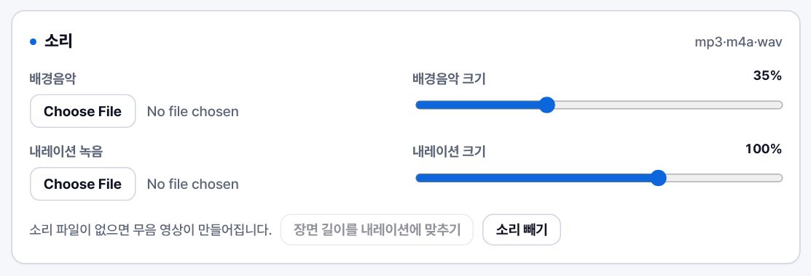
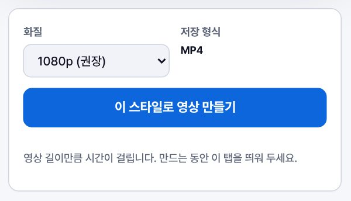
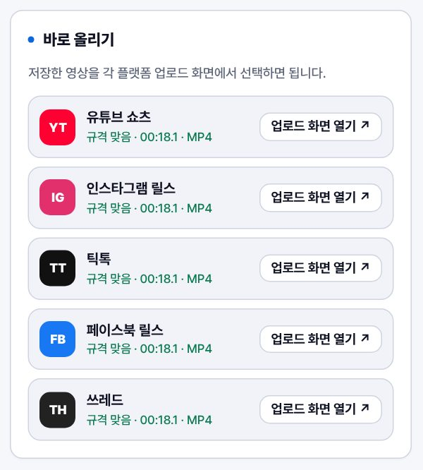

사례 01
MR.K Video Studio
사진 넣고 대본 쓰면 *쇼츠*가 나옵니다.
잘 나가는 쇼츠 형식 30가지를 스타일로 골라, 같은 내용을 30가지 영상으로 만들고 바로 올립니다. 사진·소리는 서버로 가지 않고 이 브라우저 안에서 처리됩니다.
✓스타일 30가지
✓자막·제목 자동
✓배경음악·내레이션
✓MP4 바로 저장
✓AI 대본
✓용도지역 확인
✓자막 자동
✓MP4 저장
사례 1 / 3
실제 결과 미리보기
사례 02
같은 내용이 *30가지 스타일*로 나옵니다
넣는 것
잘 나가는 쇼츠 형식(강의형·속보형·TOP3·오해vs진실·체크리스트…)을 스타일로 넣어 두었습니다. 스타일을 고르면 같은 장면이 그 형식으로 바뀝니다.
→
사례 03
상품·매물 사진을 *대표 이미지*로 한꺼번에
MR.K 영상만들기
공법의 신 고상철 · 부동산 AI 작업실 · ko372.com
01 — Shorts
숏폼 *영상* 만들기
사진과 대본을 넣고 스타일을 고르면 자막·제목·배경음악이 들어간 쇼츠가 나옵니다. 30가지 스타일로 한꺼번에 만들어 바로 올릴 수도 있습니다.
매물 사진으로 쇼츠 만들기
사진만 넣으면 AI 가 매물 설명 대본을 씁니다- 1사진
- 2정보
- 3대본
- 4목소리
- 5영상
- 6보내기
매물 사진 넣기
외관 → 거실 → 주방 → 방 → 욕실 → 주변처럼 보기 좋은 순서로 놓으면 AI 도 그 흐름을 참고합니다. 순서는 AI 가 다시 짤 수 있습니다.
매물 정보 선택 — 적은 것만 대본·설명에 씁니다
매물·중개사무소 정보 넣기
건축물 필수 항목 아파트·빌라·오피스텔·상가 등
중개사무소 이 브라우저에 기억 · 설명 끝에 적은 표시 항목
공인중개사가 인터넷에 매물을 올릴 때는 중개사무소 명칭·소재지·연락처·등록번호·개업공인중개사 성명과 매물의 소재지·면적·가격·종류·거래 형태(건축물이면 층수·사용승인일·방향·방/욕실 수·입주 가능일·주차 대수·관리비도)를 밝혀야 합니다. 적은 항목만 업로드 설명 끝에 자동으로 붙고, 빠진 항목은 ⑥에서 알려 드립니다.
16:9 가로 영상은 유튜브 일반 영상용입니다. 인스타 릴스·틱톡은 세로(9:16)를 권장합니다.
AI 로 매물 설명 대본 만들기
사진(1024px 로 줄여서)과 적은 정보만 고른 AI 로 바로 보냅니다. 가격·면적은 지어내지 않게 했지만, 올리기 전에 꼭 확인하세요.
목소리 넣기
00:00.0
마이크를 허용하고, 위 대본을 또박또박 읽은 뒤 멈춤을 누르세요. 앞뒤 조용한 부분은 저절로 잘라 냅니다. 녹음은 이 브라우저 안에서만 다룹니다.
만든 목소리는 내레이션 자리에 들어가고, 장면 길이를 장면마다 읽을 문장 길이에 맞춰 나눕니다.
영상 만들기
영상 길이만큼 시간이 걸립니다. 만드는 동안 이 탭을 띄워 두세요.
저장하고 보내기
지금 영상은 16:9 가로입니다. 인스타 릴스·틱톡은 세로(9:16)를 권장합니다 — 그대로 보내면 위아래가 비거나 잘려 보일 수 있습니다.
잘 나가는 쇼츠 스타일
장면
대본으로 장면 만들기
한 줄이 한 장면 ·*강조*는 강조색
사진이 모자라면 남는 줄은 글자 장면이 됩니다.
AI 대본 만들기
고른 스타일의 대본 뼈대를 따릅니다. 법령·수치는 올리기 전에 꼭 확인하세요.
제목 · 채널
화면 세부 조절
스타일을 고르면 여기 값이 바뀝니다. 손으로 더 다듬을 수 있습니다.소리
mp3·m4a·wav내레이션 만들기 (AI 목소리)
키는 맨 위 AI 키 칸에서 넣습니다.
키는 이 브라우저에서 각 서비스로 바로 보내지고(Fish Audio 는 이 사이트 서버가 한 번 전달만), 서버에 저장되지 않습니다. 직접 읽어 넣으려면 위 “매물 사진으로 쇼츠 만들기” ④의 내 목소리 녹음을 쓰세요.
스타일 음악
배경음악 파일을 넣으면 그 파일이 우선합니다.
소리 파일이 없으면 무음 영상이 만들어집니다.
마지막 화면
02 — Compose
대표 *이미지* 합성
메인 사진 위에 서브 사진(구성품·라벨·로고)을 같은 자리에 얹어 정사각형 대표 이미지를 한꺼번에 만듭니다. 미리보기에서 서브 사진을 끌어 위치를 옮길 수 있습니다.
메인 사진
서브 사진
배치
문구 뱃지
예: 무료배송 · 급매 · 신축저장
03 — Download
이미지 *일괄* 다운로드
상품 코드와 이미지 주소를 엑셀에서 복사해 붙여 넣으면, 크기·용량·파일 이름을 맞춰 한꺼번에 내려받습니다. PC에 있는 사진도 같은 규칙으로 일괄 변환할 수 있습니다.
내려받을 목록
상품 코드 칸이나 주소 칸을 누르고 Ctrl+V(맥은 ⌘+V)로 엑셀 여러 줄을 한 번에 붙여 넣을 수 있습니다. 두 칸(코드, 주소)을 함께 복사해도 됩니다.
| # | 상품 코드 | 이미지 주소 | 저장 이름 | 상태 | 삭제 |
|---|
_상품 코드_
300~1500px
×
px
용량 · 형식
요청 간격 · 저장
본인 상품이거나 사용 권한이 있는 이미지만 내려받으세요. 사이트마다 이용약관이 다르므로 대량 수집 전에 확인하는 것이 안전합니다.
Guide
사용 *안내*
이 화면에서 지금 쓸 수 있는 기능과 각 기능을 쓰는 순서입니다.
사용법 영상
약 1분 · 소리를 켜고 보세요지금 이 환경
AI 대본·목소리를 쓰려면 숏폼 화면 맨 위 AI 키 칸에 키 넣기 → 제미나이 키 하나면 무료 한도 안에서 시작할 수 있습니다.
쇼츠 한 편 만드는 순서
01스타일 고르기
잘 나가는 쇼츠 형식 30가지 중 하나를 누릅니다. 미리보기가 바로 그 형식으로 바뀝니다.

02사진 넣기
매물·현장·강의 자료 사진을 순서대로 넣습니다. 사진이 없어도 글자 장면으로 만들 수 있습니다.

03대본 넣기
한 줄에 한 장면씩 씁니다. 강조할 단어는 *별표*로 감쌉니다. AI 대본이 켜져 있으면 주제만 넣어도 됩니다.

04소리 넣기
배경음악·내레이션 녹음을 넣고, 필요하면 “장면 길이를 내레이션에 맞추기”를 누릅니다.

05영상 만들기
이 스타일로 한 편, 또는 30가지 전부를 ZIP으로 만듭니다. 영상 길이만큼 시간이 걸립니다.

06바로 올리기
“바로 올리기”에서 유튜브·인스타·틱톡·페이스북·쓰레드 업로드 화면을 열고, 복사한 제목·해시태그를 붙여 넣습니다.

알아 두면 좋은 점
- 영상은 실제 길이만큼 녹화하듯 만들어집니다. 30초 영상이면 약 30초, 30가지 전부면 그 30배가 걸립니다.
- 크롬·엣지 최신 버전에서는 MP4로, 그 밖의 브라우저에서는 WEBM으로 저장됩니다. 유튜브·인스타·틱톡 모두 MP4를 받습니다.
- 사진·소리 파일은 서버로 올라가지 않고 이 브라우저 안에서만 처리됩니다.
- “프로젝트 저장”은 사진과 글(매물 정보·장면별 읽을 문장 포함)을 한 파일(.json)로 묶습니다. 소리 파일과 AI 키는 들어가지 않으니 소리는 다시 넣어 주세요.
- AI 키는 이 브라우저에서 제미나이·클로드·GPT·일레븐랩스·Fish Audio 로 바로 갑니다. “이 브라우저에 기억”을 켜지 않으면 탭을 닫을 때 지워집니다.
- 매물 쇼츠: 사진에 보이는 것과 적은 사실만 말하도록 했지만, 가격·면적·층 같은 숫자와 표현은 올리기 전에 꼭 확인하세요. ②에 적은 중개사무소·매물 정보는 업로드 설명 끝에 표시 항목으로 붙고, 빠진 필수 항목은 ⑥에서 알려 드립니다.